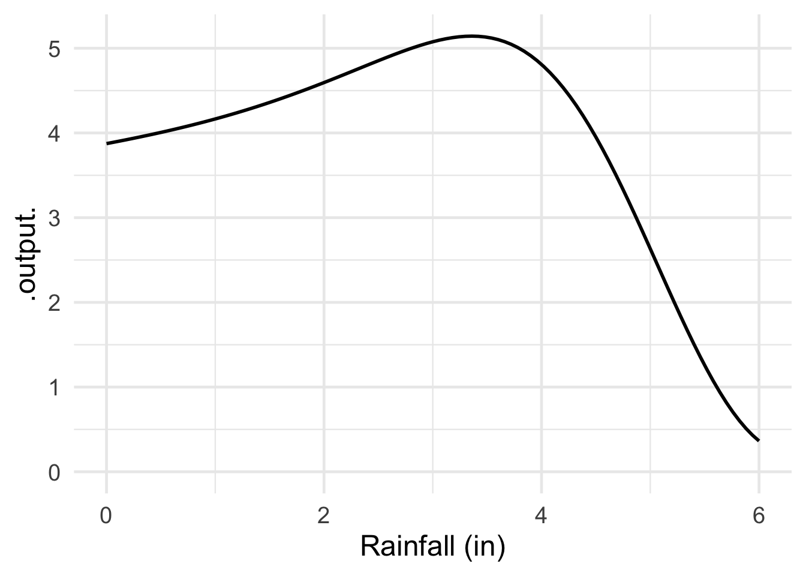
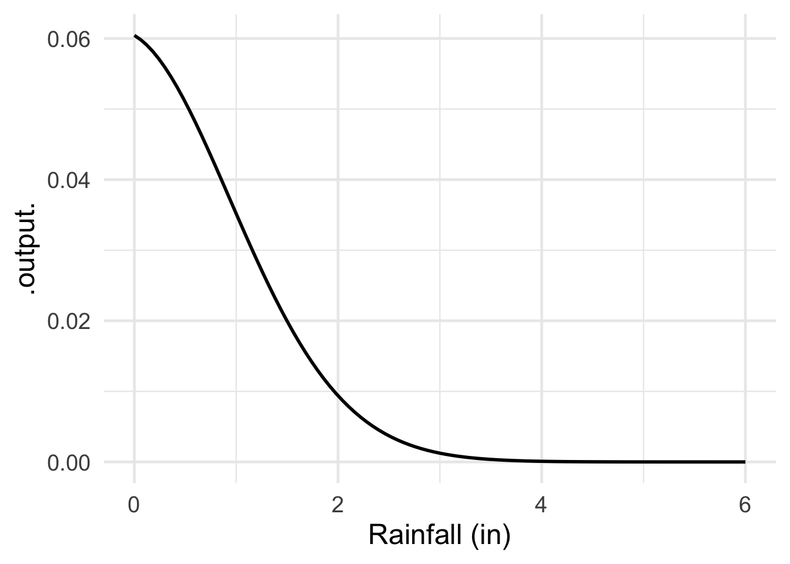

Quantitative Argumentation
Chapter 8 Exercises
Note8.A
Exercise 1 Large Language Models generate responses in steps. In each step, one new token is added to the part of the response that has already been formed. To illustrate, here are the tokens that one AI considers to be likely to follow, “When I was walking …”.
| token | weight | lyrics |
|---|---|---|
| in | 2.8 | 2.1 |
| around | 1.4 | -0.1 |
| to | 3.1 | 0.6 |
| through | 0.7 | 1.0 |
| down | -1.2 | 1.8 |
| home | 1.9 | 2.0 |
| back | -0.3 | -1.1 |
| I | 1.7 | 0.8 |
| by | -1.1 | 1.6 |
| along | -2.6 | 1.4 |
Each word is assigned a weight. There are typically around 50,000 words to choose from. The above shows just a handful of the more likely ones.
The prompt “What are the most likely AI tokens that might follow ‘When I was walking’” generated the weights in the middle column. But for the “lyrics” column, the prompt was preceeded by “Taking into account the lyrics of popular music, ….”
- The numbers in the “weight” and “lyrics” columns are not relative probabilities. Which of the following explanations is most salient for this conclusion?
Relative probabilities do not need to add up to 1.
Relative probabilities do not need to be non-negative.
A relative probability can never be zero.
In fact, the weights generated by the AI are not relative probabilities. They are ordinary numbers which might be large or small, positive or negative. In the context of indicating a relative probability, the AI weights are called “logits.” Converting a logit to a relative probability is simple: use the core modeling function exp2(). The following chunk reads the weights and words into an R data frame, then does the conversion to relative and absolute probabilities.
#| caption: "Working with logits"
Walking_words <- tibble::tribble(
~ word, ~ weight, ~ lyrics,
"in" , 2.8 , 2.1,
"around" , 1.4 , -0.1,
"to" , 3.1 , 0.6,
"through" , 0.7 , 1.0,
"down" , -1.2 , 1.8,
"home" , 1.9 , 2.0,
"back" , -0.3 , -1.1,
"I" , 1.7 , 0.8,
"by" , -1.1 , 1.6,
"along" , -2.6 , 1.4,
)
Walking_words |>
dplyr::mutate(
# Convert to relative probabilities
in_general = exp2(weight),
in_lyrics = exp2(lyrics),
# Convert those to absolute probabilities)
prob_general = in_general / sum(in_general),
prob_lyrics = in_lyrics / sum(in_lyrics),
# and compare the lyrics to the general
ratio = prob_lyrics / prob_general
)- Which three words are much more likely to occur following “When I was walking” in the context of lyrics compared to general text?
Exercise 2 An (absolute) probability is also a relative probability.
Exercise 3 Each of the following graphics, except one, can be interpretted as a relative probability function. Which is the exception?




Exercise 4 AI Generated:
- A freelance consultant charges a flat fee of $75 per hour for her services. Which type of growth describes her total earnings as she works more hours?
Think about whether the ‘bonus’ for working one extra hour changes or stays the same regardless of how many hours have passed.
Exercise 5 Everyone is in favor of reducing deaths due to pollution, illness and disease. It makes sense then to measure the reduction in deaths. In everyday speech and in the media, reduction in deaths is operationalized by lives saved.
BEFORE MOVING ON, answer question 1 without looking at the remainder of this exercise.
- Do you see any flaws in measuring lives saved? What are they? Or, feel free to anticipate a claimed flaw and argue that it isn’t a flaw at all.
.
.
Blank space to keep you from looking ahead.
.
.
Suppose—a nasty hypothetical ethics problem—there are two people, A and B, whose lives you could save. But you can only save one of them. Whether this is a realistic scenario is not at issue here; we’ll see in later chapters that it often arises, with “you” replaced by “society.”
Further suppose that person A is twenty years old and person B is eighty years old.
Which of these actions would you take?
a. Save the younger person. b. Save the older person. c. Flip a coin to determine whom to save.We’re not suggesting that there is a right answer but we want you to think about whether some choices are better than others.
Explain (briefly) whether you think the coin flip option is better than either (a) or (b). Justify your answer.
For those of you who selected option (a), we want to provide a means to operationalize avoiding deaths. But, since everyone dies, let’s turn things around: operationalizing life. In particular, we will measure the impact of your intervention in terms of ☞ life-years ☜.
A catch is that its hard to know when the saved person will eventually die, so its hard to know at the decision time how many life-years will be gained. As an expedient, we’ll do the calculation based on life expectancy, a statistical measure of the average number of years that a cohort of people are expected to survive. For instance, for the 20-year old, the life-years will be “life expectancy at age 20.” Table 1 shows life expectancy as a function of age in the US.
| Age | Overall | Males | Females |
|---|---|---|---|
| 0 | 76.4 | 73.5 | 79.3 |
| 1 | 75.8 | 73.0 | 78.7 |
| 5 | 71.9 | 69.1 | 74.8 |
| 10 | 66.9 | 64.1 | 69.8 |
| 15 | 62.0 | 59.2 | 64.9 |
| 20 | 57.1 | 54.4 | 60.0 |
| 25 | 52.5 | 49.8 | 55.2 |
| 30 | 47.8 | 45.4 | 50.4 |
| 35 | 43.3 | 41.0 | 45.7 |
| 40 | 38.8 | 36.6 | 41.1 |
| 45 | 34.4 | 32.3 | 36.5 |
| 50 | 30.1 | 28.2 | 32.1 |
| 55 | 26.0 | 24.2 | 27.8 |
| 60 | 22.1 | 20.5 | 23.7 |
| 65 | 18.4 | 17.0 | 19.7 |
| 70 | 14.9 | 13.7 | 16.0 |
| 75 | 11.6 | 10.6 | 12.5 |
| 80 | 8.7 | 7.9 | 9.4 |
| 85 | 6.3 | 5.6 | 6.7 |
| 90 | 4.4 | 3.9 | 4.6 |
| 95 | 3.0 | 2.7 | 3.2 |
| 100 | 2.2 | 1.9 | 2.2 |
- Let’s assume that our hypothetical 20-year old and 80-year old are both female.
How many life years would saving the 20-year old produce?
How many life years would saving the 80-year old produce?
Suppose you could save multiple 80-year olds, but only one 20-year old. How many 80-year olds would correspond in life years to the 20-year old?
How comfortable or uncomfortable would you be making decisions on such a basis?
A “refined” operationalization of lives saved takes into account the “quality” of life. This is called “Quality Adjusted Life Years,” or QALYs for short.
NoteChap 8 Key vocabulary
Only one of the following is a valid description of bayesian. Mark that one.
Only one of the following is a valid description of exponential distribution. Mark that one.
Only one of the following is a valid description of frequentism. Mark that one.
Only one of the following is a valid description of hypothesis. Mark that one.
Only one of the following is a valid description of mean. Mark that one.
Only one of the following is a valid description of normal distribution. Mark that one.
Only one of the following is a valid description of probability distributions. Mark that one.
Only one of the following is a valid description of random number generation. Mark that one.
Only one of the following is a valid description of range. Mark that one.
Only one of the following is a valid description of relative probability. Mark that one.
Only one of the following is a valid description of simulation. Mark that one.
Only one of the following is a valid description of standard deviation. Mark that one.
Only one of the following is a valid description of uncertainty. Mark that one.
Only one of the following is a valid description of uniform distribution. Mark that one.
Only one of the following is a valid description of variance. Mark that one.